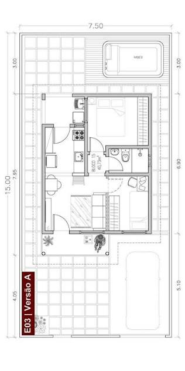

Como interpretar plantas baixas residenciais: O guia definitivo para iniciantes e estudantes de engenharia.
Por: Engenheiro Frederico
Aprender a ler uma planta baixa é o primeiro passo para o sucesso em qualquer obra. Neste artigo, desmistificamos os símbolos técnicos, escalas, representações de portas, janelas e paredes estruturais. Entenda como transformar linhas no papel em construções reais de forma segura e eficiente.